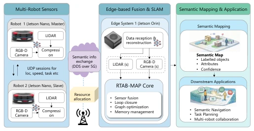
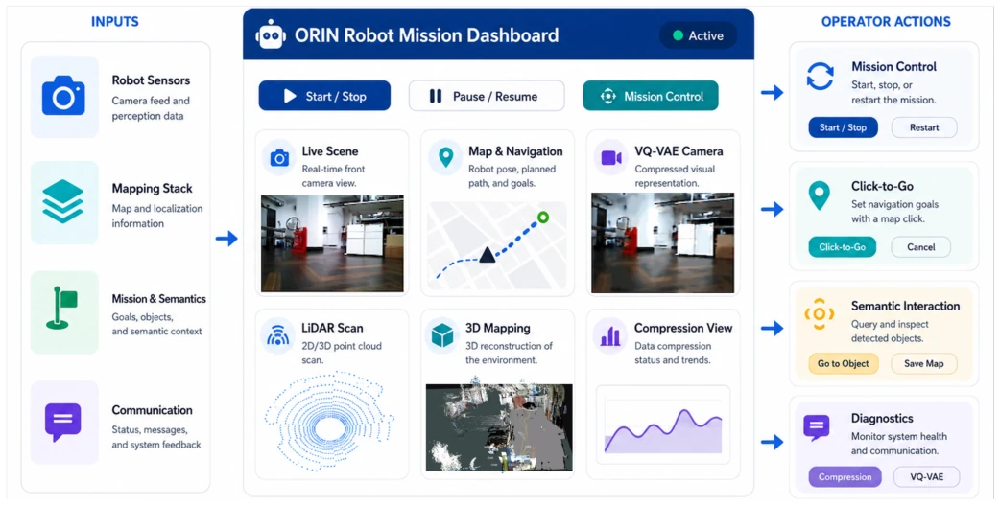
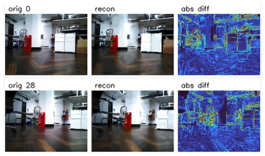

EN
← 返回 ← Back
When Robots Exchange Meaning: A Demo of Goal-Oriented Semantic Communications for Collaborative Robotics
Peizheng Li, Xinyi Lin, Sajida Gufran, Adnan Aijazabs pdf
论文点评 Review 这篇论文与其说是科研突破，不如说是工业界的一次“概念验证秀”。Toshiba 团队把语义通信（SemCom）硬塞进机器人协作里，试图用 VQ-VAE 把图像压成 token 流，再在边缘端还原。亮点是确实跑通了从机器人端到边缘端的语义传输闭环，还接上了 ROS 2 和 RTAB-Map，让“通信质量”不再只是看丢包率，而是看能不能导航。但槽点也不少：PSNR 才 21dB 左右，重建图糊得能看清轮廓就算胜利，这真的够“语义”吗？而且这还是个 Work-in-Progress 的 Demo，无线延迟、能耗都没测，所谓的 6G 任务导向更多是画饼。不过，能把 VQ-VAE 塞进嵌入式机器人跑通，至少证明了 SemCom 在具身智能里不是纯理论空谈，算是给未来 6G 机器人网络搭了个粗糙但可用的脚手架。
—
研究动机 Motivation 现有 6G 系统仍停留在以数据包为中心的优化，而协作机器人需要的是任务完成度而非单纯的传输指标 [1]。机器人产生海量感知数据（RGB-D、LiDAR），但下游任务只关心语义信息，传统压缩浪费带宽。语义通信（SemCom）能压缩数据同时保留任务相关表征，但缺乏与具身 AI 结合的实证平台。现有工作多关注网络层算法，忽略了机器人侧的嵌入式部署和边缘 SLAM 的融合 [2]。本文旨在填补这一空白，展示如何在真实机器人系统中实现从语义压缩到地图构建的端到端流程，为任务感知网络提供实验基础。
—
方法 Method 系统采用机器人 - 边缘架构。机器人端（Jetson Nano）运行 ROS 2，通过 VQ-VAE 将 320×240 RGB 帧编码为 80×60 的 token 网格，使用 ONNX Runtime 推理，Payload 仅 5400 字节，压缩比达 42.67 倍。边缘端（Jetson Orin）接收 token，用 PyTorch 解码还原图像，并融合深度、位姿数据。核心创新在于将语义流与传统遥测分离，利用 RTAB-Map 构建 3D 地图，并在重建图像上运行微调的 YOLO 检测器，将物体投影到语义地图中。最后通过 Dashboard 实现任务控制，允许操作员基于重建视图下达导航指令。整个流程强调语义 token 到机器人效用（如导航、任务规划）的映射，而非单纯图像重建质量。通信层基于私有 5G/Open RAN，语义 token 流作为独立任务流，支持资源分配。
—

Fig. 1. Robot-edge architecture for the collaborative robotics demo. 
Fig. 3. Dashboard functions illustration that combines monitoring, mapping, semantic reconstruction, and mission control. 实验 Experiments 实验基于真实机器人测试床，包含多机器人协作场景。主要指标为 Payload 减少量（42.67 倍）和重建质量（离线测试 PSNR 21.7-21.9 dB）。图 2 展示了原始与重建帧对比，模型保留了主要场景布局和大物体，丢弃了细纹理。语义地图功能验证了重建图像支持物体级交互（如语义搜索）。Dashboard 展示了监控、映射和任务控制的集成。虽然未提供详细的 5G 延迟或能耗数据，但证明了从语义视觉传输到地图交互的可行性，为后续任务感知网络研究提供了平台。视频演示展示了多机器人 RTAB-MAP 感知融合和协同控制，进一步验证了系统的可扩展性。
—

Fig. 2. Example original and reconstructed frames from the VQ-VAE pipeline.